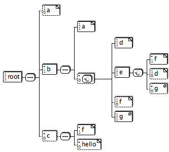

[ Start ]
[
Install etc. ]
[
Changelog ]
[
SourceForge ]
[
Graph symbols ]
[
Properties ]
[
JavaDoc ]
[
FreshMeat ]
[
Ohloh ]
[
Browse source ]
x2svg
x2svg is a tool to render tree like structures graphically as
scalable vector graphic (SVG). The SVG can then be converted to other
formats like e.g. PDF or raster formats like PNG. The PDF converter
is already built into x2svg. See below for a list of input formats.
Here is an example:
This DTD
<!-- The root element of this DTD-->
<!ELEMENT root (a? ,b+ ,c*)>
<!--A simple character node-->
<!ELEMENT a (#PCDATA)>
<!--A selection of d or e-->
<!ELEMENT b (a,(d|e|f?|g)*)>
<!ELEMENT c (f+,hello*)>
<!ELEMENT d (#PCDATA)>
<!ELEMENT e (f+|d?|g*)>
<!ELEMENT f (#PCDATA)>
<!ELEMENT hello (#PCDATA)>
<!ELEMENT g EMPTY>
will result in a diagram like this:

Currently, there are parsers for
- DTD
- Java properties files
- Ant build.xml files
- XML Schema (alpha quality)
Someone :) should
improve the parser for XML Schema documents. You can find more ideas on
how to contribute on the
Todos page.
Install etc.
See this
file. It is also contained in the distribution in the doc/ directory.
Download the package
You can download the sources for
Source code
Source code is availale in the above mentioned Download section.
If you want to access to the code between releases, then have a
look at the
Project page at SourceForge where you can browse the subversion repository.
Javadoc is also viewable
online
Changes
You can browse the
here or have a look at the
file changes.html in the doc/ folder of the distribution.
Contact
If you have any questions or comments, please contact me at
hwr@pilhuhn.de
The
Project page at SourceForge also links to the project mailing lists.
Related...
This section shows some links to related projects or web pages